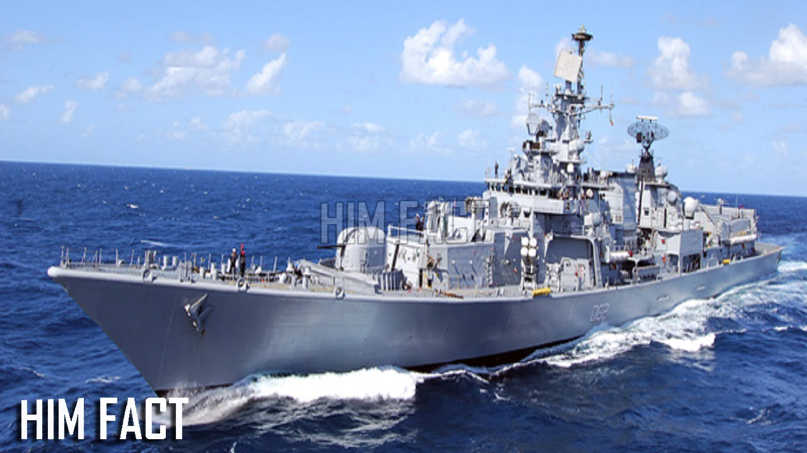
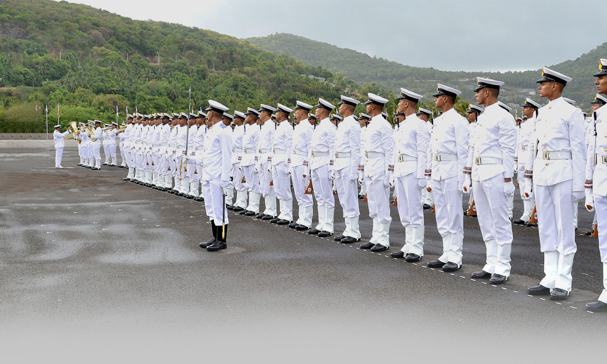

647-829-1112
ravukumarsharma170@gmail.com

INDIAN NAVY
The maritime history of India dates back to 6,000 years with the birth of art of the navigation and navigating during the Indus Valley Civilisation. A Kutch mariner's log book from 19th century recorded that the first tidal dock India has been built at Lothal around 2300 BC during the Indus Valley Civilisation, near the present day harbour of Mangrol on the Gujarat coast. The Rig Veda, credits Varuna, the Hindu god of water and the celestial ocean, with knowledge of the ocean routes and describes the use of ships having hundred oars in the naval expeditions by Indians. There are also references to the side wings of a ship called Plava, which stabilizes the vessel during storms. Plava is considered to be the precursor of modern-day stabilizers. The first use of mariner's compass, called as Matsya Yantra, was recorded in 4 and 5 AD.The first use of mariner's compass, called as Matsya Yantra, was recorded in 4 and 5 AD.
Alexander the Great during his conquest over India, built a harbour at Patala. His army retreated to Mesopotamia on the ships built at Sindh. In the later of his conquest, records show that the Emperor of Maurya Empire, Chandragupta Maurya, as a part of war office, established an Admiralty Division under the Superintendent of Ships. Many historians from ancient India recorded the Indian trade relations with many countries, and even with countries as far as Java and Sumatra. There were also references to the trade routes of countries in the Pacific and Indian Ocean.
India also had trade relations with the Greeks and the Romans. At one instance Roman historian Gaius Plinius Secundus mentioned of Indian traders carrying away large masses of gold and silver from Rome, in payment for skins, precious stones, clothes, indigo, sandalwood, herbs, perfumes, and spices.
During 5–10 AD, the Kalinga and the Vijayanagara Empires conquered Western Java, Sumatra and Malaya. The Andaman and Nicobar Islands served as an important halt point for trade ships en route to these nations and as well as China. During 844–848 AD the daily revenue from these nations was expected to be around 200 maunds (8 tonnes (7.9 long tons; 8.8 short tons)) of gold. During 984–1042 AD, under the reign of Raja Raja Chola I, Rajendra Chola I and Kulothunga Chola I, the naval expedition by Chola dynasty captured lands of Burma, Sumatra, Sri Lanka, and Malaya, and simultaneously repressing pirate activities by Sumatran warlords.
Marco Polo's remark on Indian ships (1292 AD)
... built of fir timber, having a sheath of boards laid over the planking in every part, caulked with oakum and fastened with iron nails. The bottoms were smeared with a preparation of quicklime and hemp, pounded together and mixed with oil from a certain tree which is a better material than pith
During 14th and 15th centuries, Indian shipbuilding skills and their maritime ability was sophisticated enough to produce ships with a capacity to carry over hundred men. Ships also had compartments included in their design, so that even if one compartment was damaged, the ship would remain afloat. These features of were developed by Indians even before Europeans were aware of the idea.
Role of Indian Navy
The important jobs of the Indian Navy are:
The naval force assumes a critical job in giving philanthropic help during catastrophic events, including surges, violent winds and tidal waves. In the result of the 2004 Indian Ocean quake and tidal wave, the Indian Navy propelled monstrous calamity alleviation tasks to help influenced Indian states and also Maldives, Sri Lanka and Indonesia. More than 27 ships, many helicopters, no less than six settled wing flying machine and more than 5000 work force of the naval force were sent in alleviation operations.
Names of Ships


- Nuclear-powered submarines
- Conventionally-powered submarines
- Deep submergence rescue submersibles
- Aircraft carriers
- Destroyers
- Frigates
- Amphibious warfare ships
- Corvettes
- Mine countermeasure vessels
- Torpedo recovery vessels
- Offshore patrol vessels
- Patrol vessels
- Patrol boats
- Replenishment ships
- Support ships
Training
When you passed out the process of selection, then there will be the training of navy. The main motive of this training to boost up the individual for life in the navy. The training of navy is in the form of academic and physical as well. Once you join the training, it is the responsibility of the navy to take care of all the requirements of the person like clothing, fully nutritious food, living, health etc.

Activities
Officers and Sailors alike approach a few recreational offices. As an officer or mariner taking a shot at a ship or a base, it's not simply 'all work and no play'. You will have the chance to work and live with other administration individuals, and also rest and loosen up far from the activity.
Operations
Six major operations of Indian Navy
- Op Raahat
- Op Parakram
- Op Trident
- Op Python
- Op Talwar
- Op Cactus